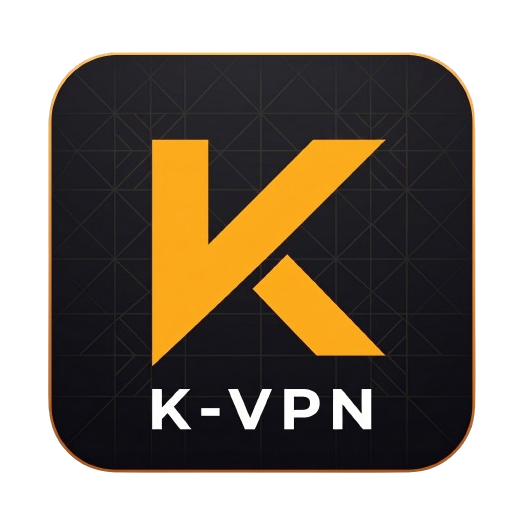

обычное соединение
- Реальный IP-адрес178.204.XX.XX
- ПровайдерВидит все ваши действия
- История браузераЛогируется навсегда
- Защита трафикаОтсутствует

K-VPNАбсолютная анонимность, свобода доступа и премиальная скорость. Ваша цифровая броня в мире без границ.
// ваш цифровой след
Без VPN ваше интернет-соединение — это открытая книга для провайдеров и злоумышленников. Посмотрите на разницу.
// анонимность без
Мы используем технологии, которые делают блокировку технически невозможной.
Использование самых современных протоколов шифрования и обфускации для стабильного обхода систем глубокой фильтрации трафика (DPI).
Наши серверы работают исключительно в RAM. Данные стираются при перезагрузке, вести логи технически невозможно.
Порты до 10 Гбит/с на каждом сервере. Смотрите 4K-стримы и качайте файлы без искусственных лимитов.
// подключение в
Вам не нужно быть системным администратором. Мы сделали всё максимально просто.
Выберите тариф и получите уникальный ключ доступа в нашем Telegram-боте. Это ваш пропуск в свободную сеть.
Установите официальный клиент для вашей платформы (iOS, Android, Windows, macOS). Мы поддерживаем все современные устройства.
Вставьте полученный ключ в приложение и нажмите кнопку подключения. Готово! Вы находитесь в защищенном туннеле.
// выберите уровень
Прозрачная оплата любым удобным способом, включая карты РФ и крипту.
от 199.00 ₽ / 30 дней
от 399.00 ₽ / 30 дней
от 599.00 ₽ / 30 дней
Все, что вы хотели знать о K-VPN и вашей безопасности.
Да, сервис может работать даже при жёстких блокировках благодаря современным технологиям маскировки трафика (VLESS Reality, Hysteria 2). Они скрывают VPN-подключение под обычный HTTPS-трафик популярных сервисов, поэтому его сложнее обнаружить и заблокировать.
Вы можете оплатить подписку любыми российскими банковскими картами, через СБП, а также полностью анонимно с помощью большинства популярных криптовалют (USDT, BTC, TON).
K-VPN совместим со всеми современными платформами: iOS, Android, Android TV, Google TV, Windows, macOS и Linux. Вы также можете настроить сервис на своем роутере, чтобы защитить сразу все домашние устройства через один туннель.
Это технически исключено. Наши серверы работают в режиме RAM-only: операционная система и софт загружаются прямо в оперативную память. Жестких дисков для хранения логов просто нет, а при любой перезагрузке все временные данные уничтожаются.